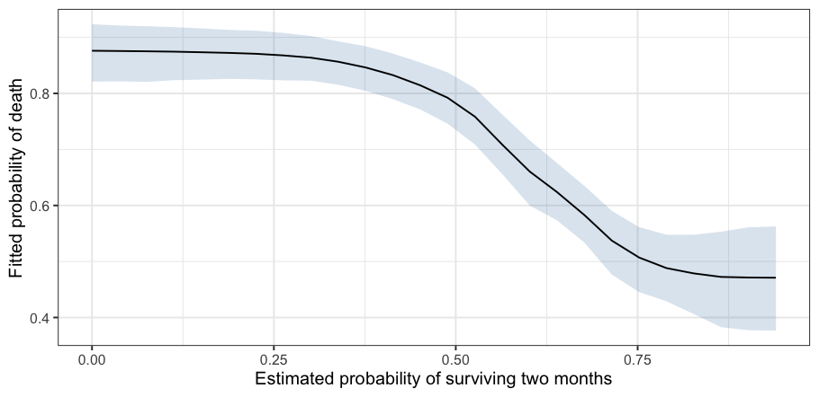
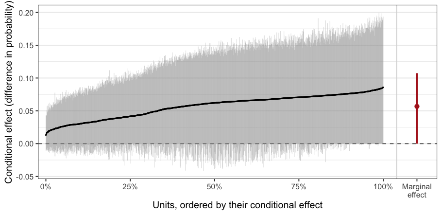

Overview
Bayesian additive regression trees (BART) estimate a regression function as a sum of small trees, so nonlinearity and interactions are found rather than specified. bartisan does that for response distributions that standard BART cannot reach, using the Laplace-approximation reversible-jump sampler of Linero (2025), which relaxes the requirement that the leaf parameters be integrable in closed form. That requirement ties standard BART to a Gaussian likelihood, and lifting it is the sense in which the model here is generalized: the same sense a generalized linear model is, in which the response distribution is a choice the analyst makes rather than an assumption the sampler imposes.
A model is written the way it is in glm(), with a formula, a data frame, and a family, and the stats::family objects glm() takes are accepted unchanged. Beyond them come the families that have no glm() counterpart: negative binomial, ordinal, multinomial, beta and ordered beta, zero-inflated counts, a Tweedie compound Poisson, accelerated failure time and proportional hazards models for right-censored times, location-scale regression, a Dirichlet process mixture for the error distribution, and a log density written as an R function. Decision rules are smooth by default, in the manner of Linero and Yang (2018), which fits a smoother function than the step functions of standard BART.
bartisan supports varying-coefficient models, where the effect of a predictor receives its own forest, a special case of which is the Bayesian causal forest (BCF) model for estimating treatment effects. Along with this is an interface for estimating average treatment effects from BART and BCF models. In addition, bartisan supports random intercepts BART models.
Integration is provided with the future and progressr packages for parallel processing and progress bars.
Installation
bartisan is not yet on CRAN. You can install the development version from GitHub with:
# install.packages("pak")
pak::pak("ngreifer/bartisan")Installation compiles C++, so it needs a C++17 toolchain.
Example
rhc holds 1500 critically ill patients from the SUPPORT study, recording whether each was given right heart catheterization on admission to intensive care, whether they died during follow-up, and thirteen covariates measured beforehand (Connors et al. 1996). Fitting a model to it takes one call, and the family is the one glm() would be given:
library(bartisan)
data("rhc")
set.seed(123)
fit <- bartisan(death ~ rhc + age + sex + race + edu + pafi +
paco2 + crea + surv2m + card,
data = rhc, family = binomial())
fit
#> Generalized BART
#>
#> Call:
#> bartisan(formula = death ~ rhc + age + sex + race + edu + pafi +
#> paco2 + crea + surv2m + card, data = rhc, family = binomial())
#>
#> Family: "binomial" with the "logit" link
#> Observations: 1500
#> Structure: 1 forest of 50 trees, soft decision rules
#> Draws: 800 kept after 200 warmupCalling summary() on the fit displays a measure of variable importance, how often predictors were used to split the trees:
summary(fit)
#> Generalized BART
#>
#> Call:
#> bartisan(formula = death ~ rhc + age + sex + race + edu + pafi +
#> paco2 + crea + surv2m + card, data = rhc, family = binomial())
#>
#> Family: "binomial" with the "logit" link
#> Observations: 1500
#> Structure: 1 forest of 50 trees, soft decision rules
#> Draws: 800
#>
#> Predictor usage
#> Splitting rules per draw, and how often used at all.
#> mean sd lower upper prop_used
#> age 12.422 6.583 3 28.02 1.000
#> surv2m 26.810 10.464 11 49.00 1.000
#> rhc 4.916 4.248 0 17.00 0.960
#> pafi 7.811 5.587 0 21.00 0.941
#> paco2 5.221 4.787 0 17.00 0.909
#> crea 10.167 9.482 0 34.02 0.897
#> edu 3.114 3.225 0 11.03 0.789
#> card 2.980 3.626 0 12.00 0.608
#> sex 2.354 3.245 0 10.00 0.521
#> race 1.176 1.762 0 6.00 0.439Nothing had to be said about which predictors matter, which are curved, or which interact. plot() shows what the model made of one of them, here the study’s own estimate of each patient’s chance of surviving two months:
partial_dependence(fit, ~ surv2m) |>
plot() +
ggplot2::labs(x = "Estimated probability of surviving two months",
y = "Fitted probability of death")
A forest has no coefficients, so an effect is a contrast between what the model predicts under one value of a predictor and under another, averaged over the sample. Every posterior draw goes through that contrast, so what comes back is a credible interval rather than a standard error:
estimate_effect(fit, treat = "rhc")
#> Average treatment effect (difference)
#>
#> Treatment: `rhc`
#> Averaged over 1500 units
#>
#> contrast estimate lower upper n
#> Y[1] - Y[0] 0.0568 0 0.107 1500
#>
#> Average potential outcomes
#>
#> quantity estimate lower upper
#> Y[0] 0.633 0.605 0.664
#> Y[1] 0.690 0.649 0.725
#>
#> ℹ estimate is the posterior mean; lower and upper bound the 95% equal-tailed
#> credible interval.
#> ℹ Y[a] is the average response with `rhc` set to "a".To examine effect heterogeneity, one can generate a plot of conditional effect estimates for all units:
estimate_effect(fit, treat = "rhc", estimand = "CATE") |>
plot()
Learning More
vignette("bartisan") is the place to start. It carries one analysis from the formula through to the estimates, and each of its sections points at the guide that takes that step further:
| Topic | Vignette |
|---|---|
| Choosing a response family | vignette("families") |
| Censored and survival outcomes | vignette("survival") |
| Varying coefficient models | vignette("varying") |
| Effects, curves, and interactions | vignette("effects") |
| Which predictors the model uses | vignette("importance") |
| Convergence and model fit | vignette("diagnostics") |
| Comparing and selecting models | vignette("comparison") |
| Causal inference and Bayesian causal forests | vignette("causal") |
| What the model is and how it is fitted | vignette("implementation") |
| Short answers to common questions | vignette("faq") |
A fitted model also works with the packages that already read Bayesian fits: marginaleffects for a wider range of estimands, loo for model comparison, bayesplot and posterior for the draws themselves, and performance for fit statistics. Load one and call its functions on the fit; there is nothing to set up.
Citing bartisan
bartisan implements the sampler of Linero (2025), and its MCMC engine is adapted from that paper’s FlexBart reference implementation. Please cite the method and the package both, the latter with its version number, which citation("bartisan") supplies. The smooth decision rules are those of Linero and Yang (2018). Both papers are listed under References below.
Questions and Bug Reports
Please file an issue at https://github.com/ngreifer/bartisan/issues, with a reproducible example where the report concerns a fit.